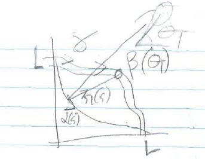
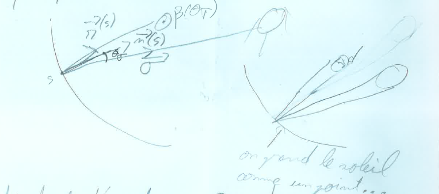

Miroir immobile, récepteur mobile¶
Introduction¶

Le concept est d’avoir un réflecteur immobile (\(\alpha\)) et un récepteur mobile (en position \(\beta(\theta_T)\)). Le récepteur mobile ne peut suivre qu’un chemin (\(\gamma\)). \(\theta_T\) représente l’angle entre l’horizontal et le soleil (c’est l’angle transversal, car on parle de concentration linéaire: c’est un cyclindre qui va réfléchir sur un tube).
L’objectif est de minimiser le nombre de moteurs (1, ou 2 grand maximum), avec un système de tracking très simple car il suffirait d’une ficelle ou 2. Les prix seraient alors grandement minimisés.
Calculs de l’efficacité optique pour l’optimisation¶

Etant donné un chemin de réflecteur \(\alpha\), mathématiquement un chemin de [0;1] dans \(\mathbb{R}²\), ainsi que le chemin possible du récepteur \(\gamma\) (les rails), il faut trouver la position \(\beta(\theta_T)\) optimal pour un design donné (et un angle solaire), sachant que \(\beta(\theta_T) \in \mathbb{T}(\gamma) = \{ \gamma(s),s \in [0;1] \}\).
Cela vient d’une optimisation: on veut maximiser le nombre de rayons sur le récepteur. On note donc \(\vec{r}(s)\) le vecteur du rayon réfléchi, \(\vec{n}(s)\) le vecteur normal à \(\alpha\). On note également \(\vec{t}(s)\) le vecteur cible (“target”). Enfin, le vecteur solaire (qui pointe vers le soleil) est noté \(\vec{\sigma}\)).
Calculs des vecteurs:
Vecteur normal: \(\vec{n}(s) = R_{\frac{\pi}{2}}.\frac{\alpha'(s)}{||\alpha'(s)||}\)
Vecteur cible: \(\vec{t}(s) = \frac{\beta(\theta_T)-\alpha(s)}{||\beta(\theta_T)-\alpha(s)||}\)
Vecteur du rayon réfléchi: on note \(\theta_\sigma = det(\vec{n}(s),\sigma).\arccos(\vec{n}(s).\vec{\sigma})\). Le déterminant permet d’orienter l’angle (à vérifier). On obtient alors: \(\vec{r}(s) = R_{\theta_\sigma}.\vec{\sigma}\).
Vecteur solaire: \(\vec{\sigma} = \begin{pmatrix} \cos(\theta_T) \\ \sin(\theta_T) \end{pmatrix}\)
Intervalle d’acceptation:
Le vecteur réfléchi doit pointer dans un intervalle d’acceptation: cela est relié à l’angle du récepteur vu par le miroir (au point s). Le demi-angle d’acceptation, noté \(\theta_a\), vérifie donc: \(\theta_a = \frac{d}{2*||\beta(\theta_T)-\alpha(s)||}\), avec d le diamètre du récepteur. Le rayon réfléchi doit donc appartenir à l’intervalle \([R_{-\theta_a}.\vec{t}(s);R_{\theta_a}.\vec{t}(s)]\).
En écrivant \(\vec{t}(s) = \begin{pmatrix} \cos(\theta_t) \\ \sin(\theta_t) \end{pmatrix}\), on obtient comme condition d’impact du rayon réfléchi sur le récepteur: \(\theta_T+\theta_\sigma \in [\theta_t-\theta_a;\theta_t+\theta_a]\)
Calcul de \(\beta(\theta_T)\) et de l’efficacité optique \(\eta_{opt}(\theta_T,\alpha,\gamma)\):
\(\beta(\theta_T) = argmax_{\beta(\theta_T) \in \mathbb{T}(\gamma)} \int_0^1 \mathbb{1}_{[\theta_t-\theta_a;\theta_t+\theta_a]}(\theta_T+\theta_\sigma) \ ds\)
\(\eta_{opt}(\theta_T,\alpha,\gamma) = max_{\beta(\theta_T) \in \mathbb{T}(\gamma)} \int_0^1 \mathbb{1}_{[\theta_t-\theta_a;\theta_t+\theta_a]}(\theta_T+\theta_\sigma) \ ds\)
Optimisation du design sur les chemins \(\alpha\) et \(\gamma\)¶
Le but est d’optimiser le design afin d’avoir l’efficacité optique maximale dans un intervalle de l’angle transversal \(\theta_T\) donné. A priori, on peut partir sur un angle \(\theta_T \in [\frac{\pi}{4}-\delta;\frac{\pi}{4}+\delta]\).
On pose alors l’ensemble \( G = \{ (\alpha,\gamma) \in \mathbb{C}([0;1],\mathbb{R}²) \, \alpha(0)=\gamma(0)=(0,L) \ \& \ \alpha(1)=\gamma(1) = (L,0) \}\), qui correspond à l’ensemble des chemins admissibles. Il est possible de rafiner cet ensemble en imposant que \(\alpha\) soit en dessous de \(\gamma\). Sur la concavité/convexité de \(\alpha\), il est peut-être possible de faire des hypothèses.
On obtient alors les chemins optimaux comme l’expression suivante: \(\alpha_{opt},\gamma_{opt} = argmax_{(\alpha,\gamma) \in G} \int_{\frac{\pi}{4}-\delta}^{\frac{\pi}{4}+\delta} \eta_{opt}(\theta_T,\alpha,\gamma) d\theta_T\)
Méthodologie numérique¶
Comment optimiser sur des chemins? A voir pour plus tard…